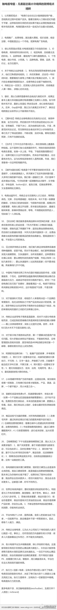

没把结果做出来，说什么都是屁。//@张桓:观点都是对的，但凡客却没有一点做到！说实话，我不喜欢实业的人讲述观点，以后这些坐而论道的浅薄观点，就让老张这等屁民讲的好，包括陈年，比老张都不着地，自娱自乐，如果真学小米从，早就摞起袖子热火朝天低调的忙活实操了！@触电报微博:【触电报专题】凡客副总裁@许晓辉 的微博观点精粹，“电商推广，如果有钱，就玩傻大黑粗、低价促销，肯定没错，中国就是这么一个市场。观某电商广告有感。。。。”更多详见长微博， 官方微信：触电报（wochudian）龚文祥（mrbrand） 